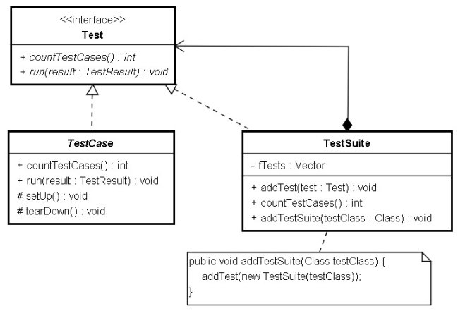

|
|
如
果你不想要讓TestRunner
找出預設的testXXX()方法來執行測試，則可以使用TestSuite來
組合你想要執行的測試。例如：
package cc.openhome; 你可以定義一個靜態（static） 的suite()方法，使之傳回TestSuite實例，在方法中 組織你想要的測試方法，如果在IDE中，會自動發現這個suite()方法、取得 TestSuite、呼叫run()方法執行測試。事實上，你使用TestRunner的run() 方法若傳入Class實例，也會自動幫你建立TestSuite： static public void run(Class testClass) {
run(new TestSuite(testClass)); } TestSuite 也實作了Test介面，這是為了以 Composite 模式 實現測試的任意組合：  正如先前的範例，此時在TestSuite 的建構式中，會以反射找出所有testXXX()方法、建立TestCase實例並加入TestSuite中。 所以基本上，真正用來組合單元測試是TestSuite。TestSuite的addTest()接 受的是Test介面的實作物件，所以TestCase與TestSuite都可以加入某個TestSuite中，另一個addTestSuite()方法名稱有點令人困惑，它並非接受 TestSuite的實例，而是接受Class的實例，而它只不過是個代為建立TestSuite的簡便方法： public void addTestSuite(Class testClass) { addTest(new TestSuite(testClass)); } 例 如，如果你已經有OOOTest、XXXTest、YYYTest等TestCase的子類別，如果想要寫個檔案，一次運行這三個測試案例，方式很簡單： ...
public class TestAll { public static Test suite() { TestSuite suite = new TestSuite(); suite.addTestSuite(OOOTest.class); suite.addTestSuite(XXXTest.class); suite.addTestSuite(YYYTest.class); return suite; } public static void main(String[] args) { TestRunner.run(suite()); } } 如果想讓IDE自動發現定義的suite()方法，則繼承 TestCase是必要的，所以可以如下撰寫： ...
public class TestAll extends TestCase { public static Test suite() { TestSuite suite = new TestSuite(); suite.addTestSuite(OOOTest.class); suite.addTestSuite(XXXTest.class); suite.addTestSuite(YYYTest.class); return suite; } } 由於實現了 Composite 模式，所以組合的方式很多元化，例如： ... public static Test suite() { TestSuite suite = new TestSuite(); suite.addTest(new XXXTest("testABC")); // 執行testABC()方法 suite.addTest(YYYTest.suite()); // suite() 傳回 TestSuite實例 suite.addTestSuite(OOOTest.class); // 自動找出所有testXXX()方法 return suite; } TestRunner 最後會呼叫TestSuite的run()方法執行所有的測試： public void run(TestResult result) {
for (Enumeration e= tests(); e.hasMoreElements(); ) { if (result.shouldStop() ) break; Test test= (Test)e.nextElement(); runTest(test, result); } } public void runTest(Test test, TestResult result) { test.run(result); } |